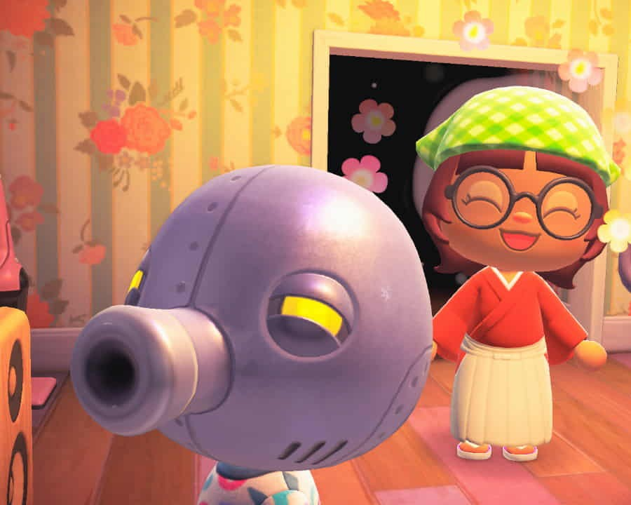

About Me

My name is Jane Beatrice Apolinario. A third year BSIT student
in Lyceum of the Philippines - Manila Campus.
Hobbies: playing video games and reading fanfiction
Preferred pronouns: she/they
Fun Fact!

This is my favorite Animal Crossing character.
This is Cephalobot, a robotic octopus who loves pizza.
I like his design and became close friends with him in the game.
Here is a photo of my avatar with him.
Here is a video I got online on Cephalobot's singing hihi.